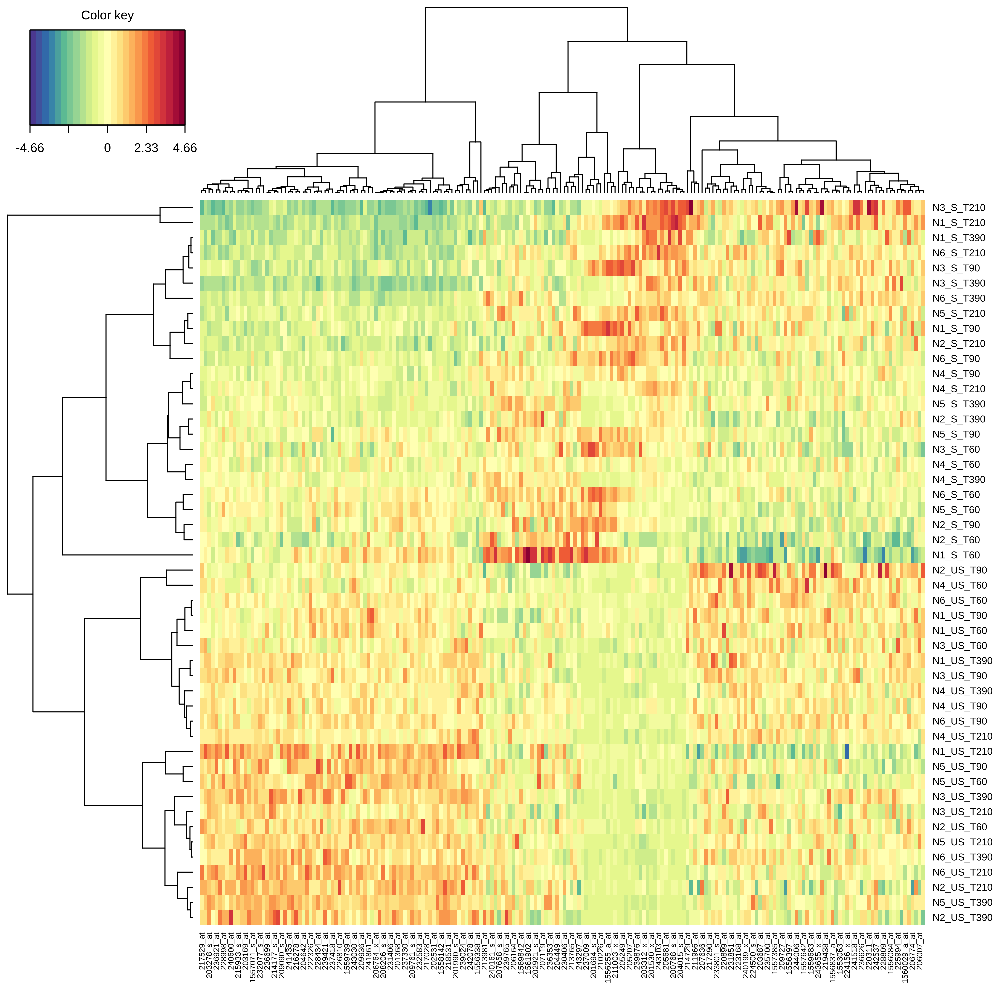
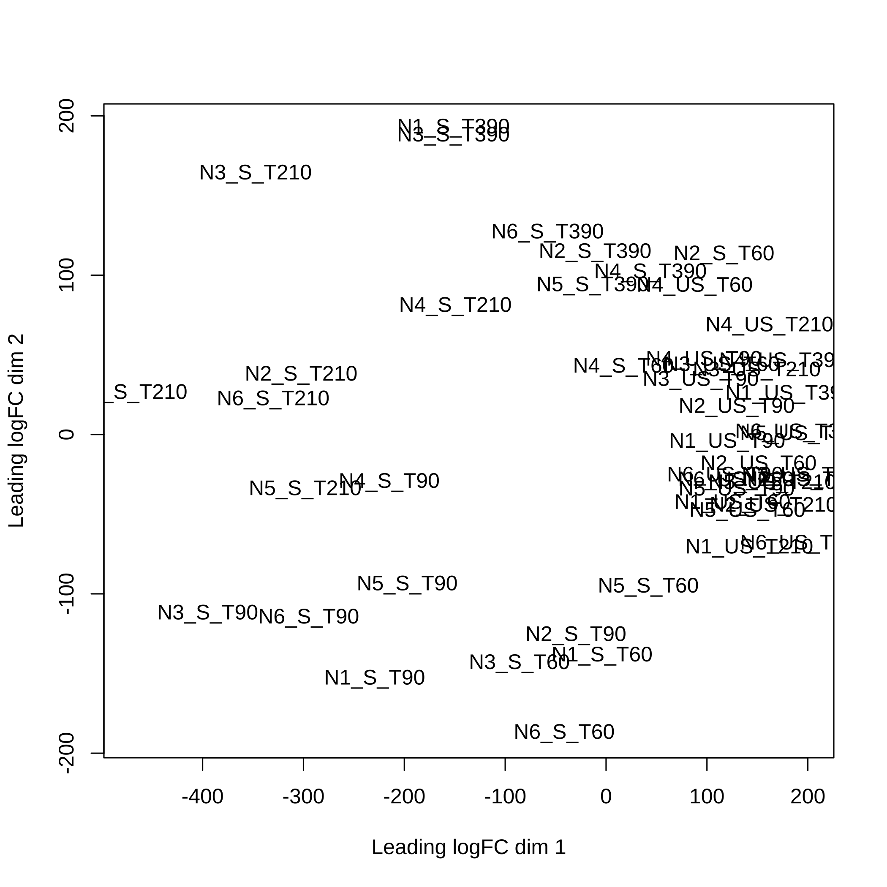
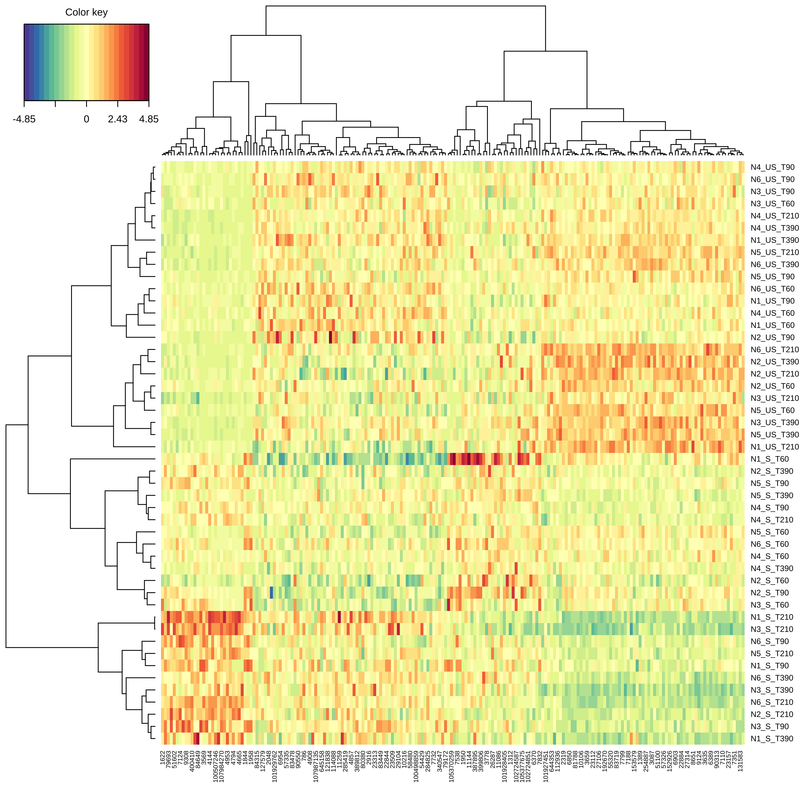
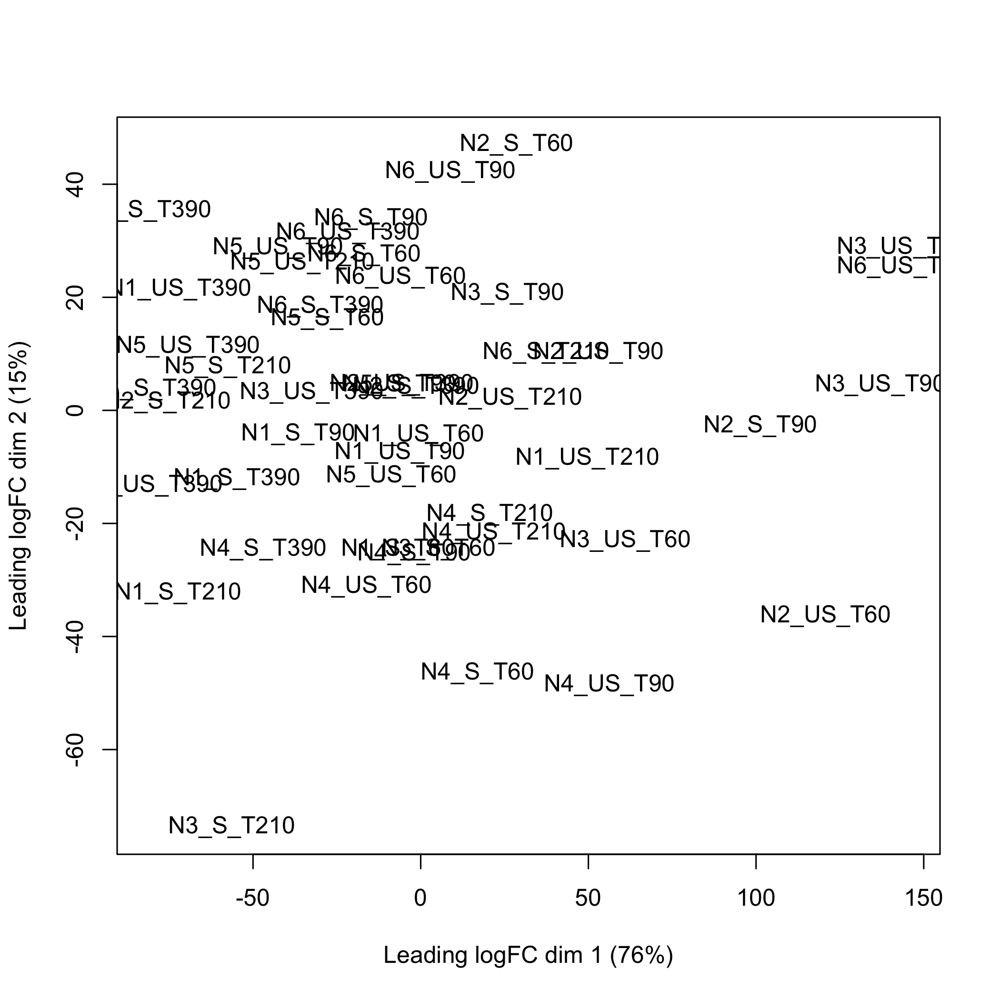

Experimental Data of Cascade Experiments in Genomics
Frédéric Bertrand and Myriam Maumy-Bertrand
The goal of CascadeData is to provide the experimental data GSE39411 in a ready to use format. Vallat L, Kemper CA, Jung N, Maumy-Bertrand M, Bertrand F, …, Bahram S, (2013), “Reverse-engineering the genetic circuitry of a cancer cell with predicted intervention in chronic lymphocytic leukemia”. Proc Natl Acad Sci USA, 110(2):459-64, https://dx.doi.org/10.1073/pnas.1211130110.
These are featured as examples by packages such as the Cascade one, a modeling tool allowing gene selection, reverse engineering, and prediction in cascade networks. (Jung, N., Bertrand, F., Bahram, S., Vallat, L., and Maumy-Bertrand, M., 2014, https://dx.doi.org/10.1093/bioinformatics/btt705).
This website and these examples were created by F. Bertrand and M. Maumy-Bertrand.
Installation
You can install the released version of CascadeData from CRAN with:
install.packages("CascadeData")You can install the development version of CascadeData from github with:
devtools::install_github("fbertran/CascadeData")Examples
Probesets
Two data frames with 54613 probesets with repeated measurements on 6 independent subjects at 4 time points.
data(micro_S)
str(micro_S)
#> 'data.frame': 54613 obs. of 24 variables:
#> $ N1_S_T60 : num 136.1 32 78 201.8 16.3 ...
#> $ N1_S_T90 : num 116.6 43.3 63.5 209.2 8 ...
#> $ N1_S_T210: num 127.6 31.3 57.9 208.8 15.8 ...
#> $ N1_S_T390: num 126.8 43.8 73.2 228.2 15.8 ...
#> $ N2_S_T60 : num 142.2 25.4 53.2 165.3 17.8 ...
#> $ N2_S_T90 : num 132.5 35.4 97.1 222.3 10.7 ...
#> $ N2_S_T210: num 122.8 33.3 66.5 175.4 12.9 ...
#> $ N2_S_T390: num 132.1 55.7 69.7 178.5 13.9 ...
#> $ N3_S_T60 : num 134 60 52.1 214.6 6.6 ...
#> $ N3_S_T90 : num 157.1 48.7 59.9 279.5 3.7 ...
#> $ N3_S_T210: num 49.1 45.7 44.1 181.2 1.3 ...
#> $ N3_S_T390: num 139.8 41.4 51.8 264.9 19.5 ...
#> $ N4_S_T60 : num 157.4 66.8 74 214.1 26.1 ...
#> $ N4_S_T90 : num 158.3 44.8 56.8 222.7 17.9 ...
#> $ N4_S_T210: num 145.9 42.5 59.8 221.8 18.5 ...
#> $ N4_S_T390: num 171.2 59.2 62.3 193.3 25.1 ...
#> $ N5_S_T60 : num 130.1 60.8 63.8 208.5 18.6 ...
#> $ N5_S_T90 : num 119.7 41.8 47.2 222.8 26.9 ...
#> $ N5_S_T210: num 121.3 40.5 62.7 226 21.5 ...
#> $ N5_S_T390: num 110 44 63 227.8 27.2 ...
#> $ N6_S_T60 : num 114.5 60.7 79.5 219.4 22.1 ...
#> $ N6_S_T90 : num 144 38.9 79.4 234.8 28.4 ...
#> $ N6_S_T210: num 128.4 38.7 63.4 241.9 30.5 ...
#> $ N6_S_T390: num 132.7 52.3 66.6 218.7 19.2 ...
data(micro_US)
str(micro_US)
#> 'data.frame': 54613 obs. of 24 variables:
#> $ N1_US_T60 : num 103.2 26 70.7 213.7 13.7 ...
#> $ N1_US_T90 : num 133.7 34.9 71.2 168.9 17.2 ...
#> $ N1_US_T210: num 157.3 44.2 59.4 175.1 27.8 ...
#> $ N1_US_T390: num 179.4 44.1 62.7 225.1 10.5 ...
#> $ N2_US_T60 : num 120.7 47.4 85.8 156.7 16.7 ...
#> $ N2_US_T90 : num 150.5 40.4 74.4 200.4 25.8 ...
#> $ N2_US_T210: num 153.5 51.8 71.7 181.6 23 ...
#> $ N2_US_T390: num 174.8 61.6 66.8 224.5 12.2 ...
#> $ N3_US_T60 : num 145 64.5 50.8 184.5 17.5 ...
#> $ N3_US_T90 : num 162.2 58.7 51.9 219.1 21.5 ...
#> $ N3_US_T210: num 177.8 35.9 58.3 250 12.7 ...
#> $ N3_US_T390: num 189.6 50.5 62.8 262 20.1 ...
#> $ N4_US_T60 : num 136 60.9 67.8 227.1 29.6 ...
#> $ N4_US_T90 : num 135.2 62.2 65.3 221.1 18.2 ...
#> $ N4_US_T210: num 165.3 62.7 63.3 212.1 21.4 ...
#> $ N4_US_T390: num 154.3 47.1 68.9 199.7 9.3 ...
#> $ N5_US_T60 : num 130.9 57.5 56.5 199 20.5 ...
#> $ N5_US_T90 : num 122.3 49.4 62 226.8 15.4 ...
#> $ N5_US_T210: num 184.8 57.2 53.4 191.2 18.1 ...
#> $ N5_US_T390: num 174.6 68 69.1 214 16.5 ...
#> $ N6_US_T60 : num 142.8 67.9 73.3 220.1 24.7 ...
#> $ N6_US_T90 : num 148.1 46.4 79.9 257.7 20.7 ...
#> $ N6_US_T210: num 198.1 53.9 68.6 223.3 18.9 ...
#> $ N6_US_T390: num 155.8 42.6 63.2 236.7 15.2 ...Some preliminary between group comparison. First create grouping factor.
Then, create the 2 most discriminative components (probeset linear combinaison, i.e. scores) featuring 100 probesets each using sparse partial least squares discrimant analysis from the mixOmics package, doi:10.18129/B9.bioc.mixOmics. An optimal choice of the number of components and of the number of kept genes can be carried out using cross-validation.
First makes sure that the mixOmics Bioconductor package is installed.
if (!requireNamespace("limma", quietly = TRUE)){
if (!requireNamespace("BiocManager", quietly = TRUE)){
install.packages("BiocManager")
}
BiocManager::install("limma")
}Create a clustered image map (cim, i.e. heat map) to represent the results of the splsda analysis.
mixOmics::cim(modsplsda)
Retrieve the names of the probesets that were selected to create the 2 splsda components
selectedprobesets<-unique(mixOmics::selectVar(modsplsda)$name,
mixOmics::selectVar(modsplsda, comp=2)$name)First makes sure that the limma Bioconductor package is installed.
if (!requireNamespace("limma", quietly = TRUE)){
if (!requireNamespace("BiocManager", quietly = TRUE)){
install.packages("BiocManager")
}
BiocManager::install("limma")
}Using the limma, doi:10.18129/B9.bioc.limma, plotMDS function to create the multidimensional scaling plot of distances between the probeset expression profiles that were selected using splsda.

Entrez GeneIDs
The jetset package enables the selection of optimal probe sets from the HG-U95Av2, HG-U133A, HG-U133 Plus 2.0, or U133 X3P microarray platforms. It requires the org.Hs.eg.db Bioconductor package, doi:10.18129/B9.bioc.org.Hs.eg.db.
First makes sure that the jetset CRAN package and the org.Hs.eg.db Bioconductor package are installed.
if (!requireNamespace("org.Hs.eg.db", quietly = TRUE)){
if (!requireNamespace("BiocManager", quietly = TRUE)){
install.packages("BiocManager")
}
BiocManager::install("org.Hs.eg.db", version = "3.8")
}
if (!requireNamespace("jetset", quietly = TRUE)){
install.packages("jetset")
}Retrieve the optimal probesets for a given Entrez GeneID.
library(jetset)
resjetset=jetset::jmap("hgu133plus2", eg = sort(unique(scores.hgu133plus2$EntrezID)))Select the optimal probesets from the datasets for a given Entrez GeneID.
micro_S_jetset<-micro_S[resjetset,]
rownames(micro_S_jetset)<-names(resjetset)
micro_US_jetset<-micro_US[resjetset,]
rownames(micro_US_jetset)<-names(resjetset)Then, create the 2 most discriminative components (probeset linear combinaison, i.e. scores) featuring 100 probesets each using sparse partial least squares discrimant analysis from the mixOmics package, doi:10.18129/B9.bioc.mixOmics. An optimal choice of the number of components and of the number of kept genes can be carried out using cross-validation.
First makes sure that the mixOmics Bioconductor package is installed.
modsplsda_jetset=mixOmics::splsda(t(cbind(micro_S_jetset,micro_US_jetset)),
groupf, ncomp = 2, keepX = c(100, 100))Create a clustered image map (cim, i.e. heat map) to represent the results of the splsda analysis.
mixOmics::cim(modsplsda_jetset)
Retrieve the Entrez GeneIDs that were selected to create the 2 splsda components
selectedEntrezGeneIDs<-unique(mixOmics::selectVar(modsplsda_jetset)$name,
mixOmics::selectVar(modsplsda, comp=2)$name)First makes sure that the limma Bioconductor package is installed.
if (!requireNamespace("limma", quietly = TRUE)){
if (!requireNamespace("BiocManager", quietly = TRUE)){
install.packages("BiocManager")
}
BiocManager::install("limma")
}Using the limma, doi:10.18129/B9.bioc.limma, plotMDS function to create the multidimensional scaling plot of distances between the Entrez GeneID expression profiles that were selected using splsda.
